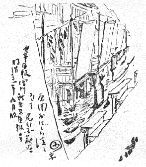

| 刎橋の受け台について | |
| 木村 荘八 | |
| (2012) | |
刎橋の受け台について
木村荘八
吉原のおはぐろ溝とこれに架かつた刎橋
――（一葉がこの字を使つている）――「たけくらべ」にいふ「......垢ぬけのせし三十あまりの年増、小ざつぱりとせし唐棧ぞろひに紺足袋はきて、雪駄ちやらちやら忙がしげに横抱きの小包はとはでもしるし、茶屋が棧橋とんと沙汰して、廻り遠やこゝからあげまする、誂へ物の仕事やさんとこのあたりに言ふぞかし......」、この棧橋。
この構造については、――前に調べたことがあつたが、その時よく分らなかつたのは、廓内の向うから落ちて架かつて来る刎橋を溝のこつちがし
で受け留める、その「受け台」についてゞある。
ところが、それがやつと分つたので、何かの文献にもと、書いておくことにした。
元々このハネバシについてぼくが書いたのは、前にも説明したやうに、舞踊の装置方をたのまれたからで、それで、ぼくとしては矢来町からの名指しでは、といふわけで、気込んで、多少は見ても書いても知つてゐたこの材料についてのチシキを、もつとしつかりしたものにしようと、前に記したやうに、あの土地へ出かけて、古老に聞きなどしたものだつた。ハネバシ考の「考」の字は飛んだひようたんから駒のいきさつを自ら喋したつもりだつた。――しかし受け台のことばかりは、その時分らず仕舞ひだつた。土地の古老の話もそこははつきりしなかつた。
いふ迄もなく「現地調査」にわざわざ千束町から龍泉寺町、地方今戸界隈迄、出かけたとは云つても、それは丁度、旅順へ観光に出かけて在りし日の激戦の様を偲ばうとするやうなもので、地形だけはざつと似てゐようとも、そこには溝も無ければ「橋」など痕跡さへその後は止どめない。やつと最後の状態の溝の川幅がコンクリートで舗装された道に、この辺かと、推定が付く位ゐのことである。
刎橋と云ひ、また一葉の文章には棧橋とあつても、それは一つのものである。「廻り遠やこゝから......」とあるのが大門口から廻つて茶屋の正面へ行くのは廻り遠や、この裏通りの橋から水口へあげまするといふ意味だ、などと、穿鑿するまでも無い。舞踊に見得の切れさうな橋は無いと思ふが、仕事やさんのとんと沙汰するにはおはぐろ溝の棧橋（刎橋）は、持つて来いの廓への近道だつた。
吉原の一廓は溝でぐるりと、囲まれてゐたので、廓内から廓外へ出る便宜の棧橋に渡されたものが家々の溝に面する裏口から架けた刎橋で、これにはつくり附けの、つまり架けつぱなしの「橋」といふ構造は一つも無い。皆刎ね上る刎橋、いひ代へれば「板」で出来たもので、必要に応じてその板を紐の操作に依つてこつちから向うへと渡す。（時間決めで暫くは橋は架かつたまゝにしてあつたものも中には在つたといふ。）そして刎橋の特徴は、それを廓内から廓外へすとんと架け渡すことは出来ても、外から内へと渡す仕組には造れなかつたことである。これは昔の城廓の刎橋と同じことで、刎橋の一番の意味と面白さがこれであらう。廓の外寄りのおはぐろ溝の岸には、一つ一つ、廓の内から架かつて来る橋板を受け留める台があつた。この台の設備なり仕組みが疑問だつたのである。
――然し、いくら古老の口で聞いてもよくわからず、考へて見ても無論一向わかる筈のなかつたものも、それを写された「絵」で見れば、一目瞭然とするのはありがたいことだつた。実は昔のその実地の写生画が見付かつたので
、忽ちこの疑問は近ごろ解けたのだつた。正岡容君から世事画報臨時増刊の新吉原画報といふ雑誌をこのためにわざわざ恵送された。明治三十一年九月発行のもの、その口絵の一枚に、おはぐろ溝といふ題で、尾竹国観の写した図が載つてゐる。これに、かゆい処へ手の届くやうに、刎橋の構造が残らず写されてゐた。そして思ふに、在りし日のおはぐろ溝の刎橋とその受台をありのまゝに図したものは、偶然の写真でもなければ、この国観の絵が世の中に唯一枚のものであらう。
図について見て頂きたいと思ふ。

Ⅸ刎橋の受け台
底本：「東京の風俗」冨山房百科文庫、冨山房
１９７８（昭和53
）年3
月29
日第1
刷発行
１９８９（平成元）年8
月12
日第2
刷発行
底本の親本：「東京の風俗」毎日新聞社
１９４９（昭和24
）年2
月20
日発行
※図版は、底本の親本からとりました。
入力：門田裕志
校正：伊藤時也
２００９年1
月6
日作成
２０１２年5
月16
日修正
青空文庫作成ファイル：
このファイルは、インターネットの図書館、青空文庫（http://www.aozora.gr.jp/）で作られました。入力、校正、制作にあたったのは、ボランティアの皆さんです。